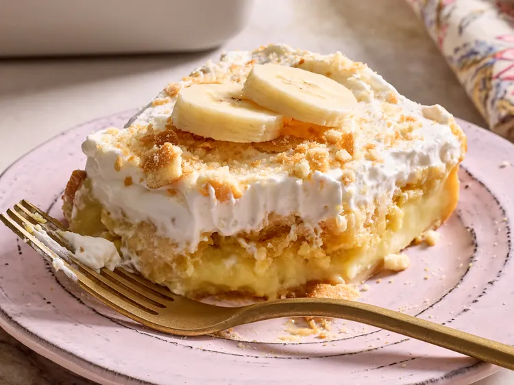

Home
Banana Pudding Dump Cake

Description
This banana pudding dump cake combines the creamy texture of banana pudding with the ease of a dump cake. Served cold with a gooey filling and a crisp, buttery topping, it’s an incredibly tasty dessert that’s perfect for potlucks.
Ingredients
- 2 (3.4 ounce) packages instant vanilla pudding mix
- 3 1/2 cups milk
- 6 medium ripe-firm bananas, sliced, plus more for garnish
- 35 vanilla wafers, plus more for garnish
- 1 (9 ounce) package yellow cake mix (1 layer size)
- 6 tablespoons butter, sliced into 12 pieces
- 1 cup heavy cream
- 1 tablespoon white sugar
- 1/2 teaspoons vanilla extract